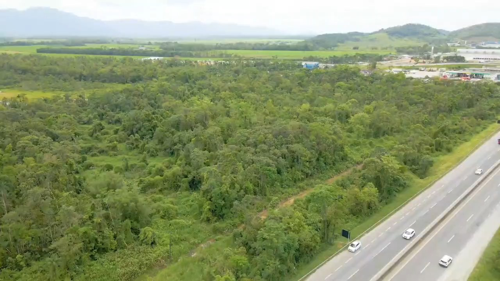

Transporte e distribuição
Uma oportunidade a estudar para empresas que buscam espaço para suas operações, conforme a atividade e as condições de acesso.
ÁREA À VENDA · MATRÍCULA 7.581
19.505,09 m² junto à BR-101, na Avenida Celso Ramos. Conheça a área e avalie sua próxima implantação no norte de Santa Catarina.
Informações e condições em conversa direta.

01 / O TERRENO
A Área A reúne 19.505,09 m² e tem localização registrada na Avenida Celso Ramos, nº 4.180, bairro Urubuquara.
A matrícula descreve limites junto à avenida e à faixa de domínio da BR-101. O zoneamento de predominância industrial oferece uma referência inicial para avaliar atividades compatíveis com o imóvel.
A implantação e os acessos dependem de análise técnica e das aprovações aplicáveis ao projeto.
Uma oportunidade a estudar para empresas que buscam espaço para suas operações, conforme a atividade e as condições de acesso.
Avaliação de operações produtivas compatíveis com o zoneamento, a área disponível e o licenciamento necessário.
Uma base para estudar um projeto próprio ou voltado a um futuro ocupante, a partir de sua demanda real.
02 / LOCALIZAÇÃO
Avenida Celso Ramos, 4.180
Área A · Urubuquara · Garuva/SC
O link indica o ponto inicial do memorial, não uma entrada confirmada do imóvel.

03 / VISÃO AÉREA
Explore as imagens do acervo de apresentação e converse conosco para conhecer a área no local.
Imagens do acervo fornecido. Não delimitam, por si, a área edificável nem substituem uma visita e os estudos técnicos.
04 / INFORMAÇÕES PARA DECIDIR
A tabela municipal disponível relaciona transporte e determinados usos industriais entre os admitidos na ZEPI-01. O uso logístico portuário aparece como permissível. O enquadramento de cada operação e a norma vigente devem ser confirmados com a prefeitura.
A área total é de 19.505,09 m². A área efetivamente edificável depende de levantamento, faixas rodoviárias, condições ambientais, recuos e estudo de implantação. Ainda não há uma metragem edificável definida nesta apresentação.
Solicite os documentos pertinentes à análise do imóvel pelo formulário abaixo. A situação registral atual e os poderes de representação para a venda devem ser conferidos durante a negociação.
Entre em contato para apresentar seu interesse. Os valores e as condições de pagamento serão tratados diretamente durante a conversa.
Dados descritivos baseados nas cópias documentais disponíveis. A apresentação não representa aprovação de projeto, autorização de acesso rodoviário ou certidão atualizada de uso do solo.
05 / VAMOS CONVERSAR
Solicite informações, manifeste interesse em conhecer o terreno ou apresente uma proposta. O atendimento é dedicado a esta área.
Conheça a área e apresente seu interesse.